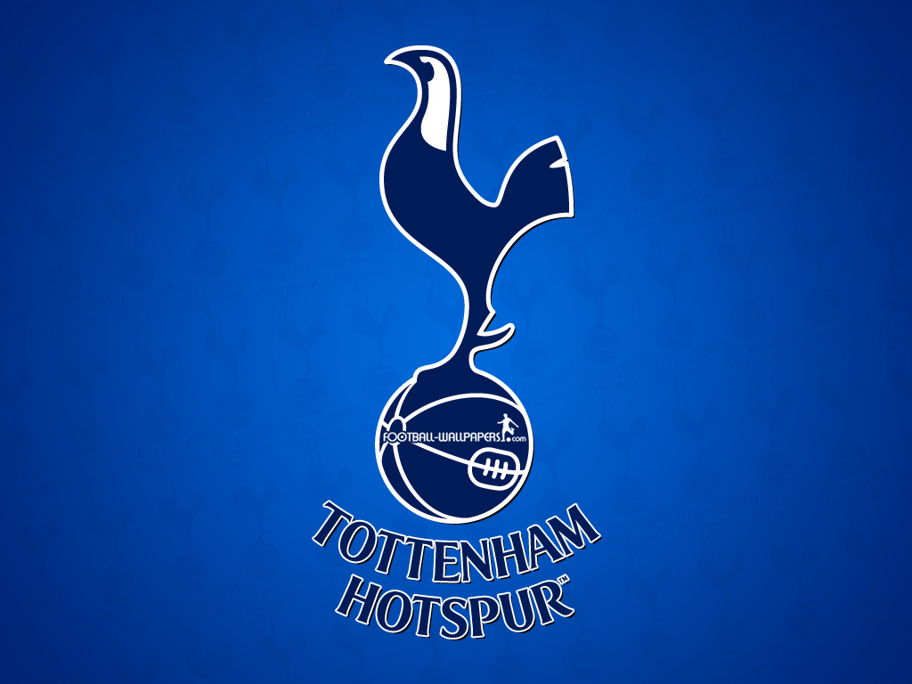
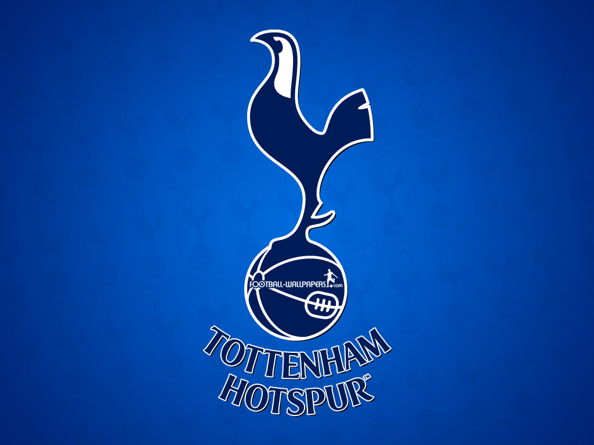
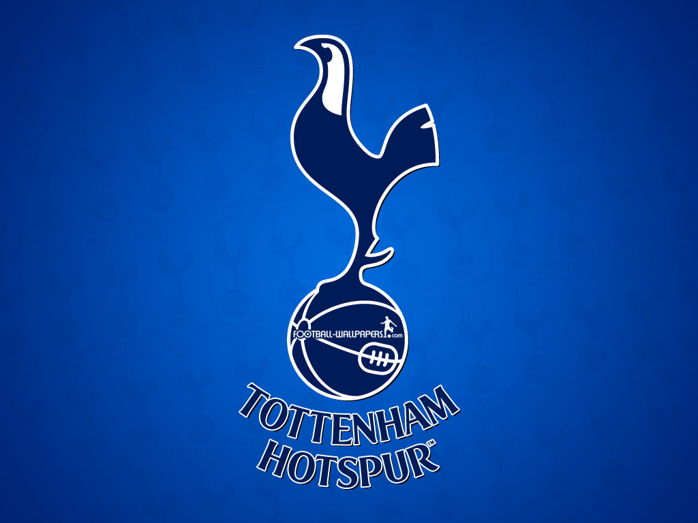
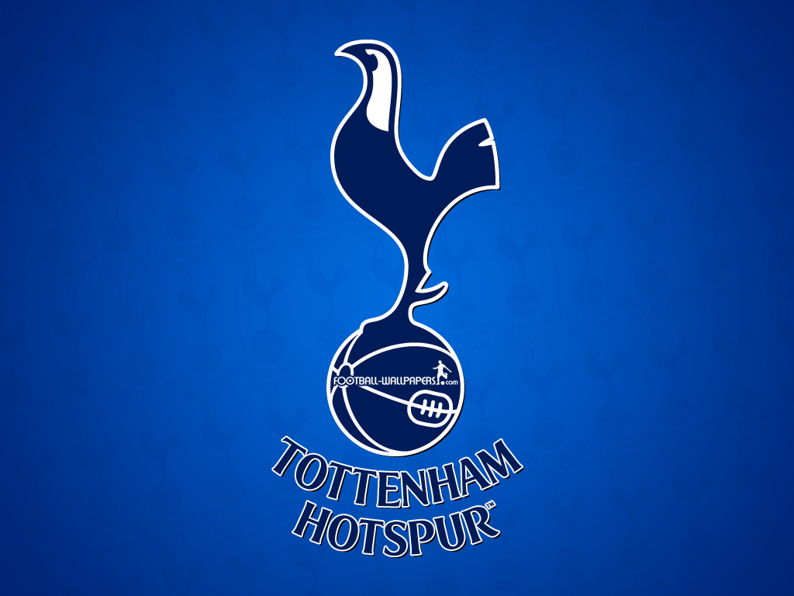

 

Tottenham Hotspur football club is an English soccer team that was formed in 1882. The team is based out of Tottenham, London and played in the southern league division until 1908 when they were promoted to Football League Second Division, this league being the main football league for England. The team was then promoted to the first division known now as “The Premier League” immediately after their first season in the second division with a second place finish. This same year the club was able to purchase the ground that has housed their stadium to this day. However, after this success the team saw poor results between 1910-1915 and were at the bottom of the league in 1915 when the league was suspended. When the league restarted in 1919 the first division was expanded to 22 teams instead of 20. Chelsea, team relegated with Tottenham, and Arsenal, a controversial pick over Tottenham, took the two added spots in the first division. This is what solidified the fierce rivalry between the Hotspur and the Arsenal Gunners. After this point the team fell into a very volatile positon in the league going up and down between divisions having great success followed by decline. Starting from the 1978-1979 Tottenham have been in the first division of the English league and have continued to have a strong presence in the league.
Since the Teams formation the club has won two league championships, eight FA Cup titles, One European Cup title, Two UEFA Cup championships, and two division two Championships.
Regarded as one of the best goalkeepers in the world, French international captain Hugo Lloris joined Spurs on transfer deadline day in August, 2012.
Powerful, attacking England international full-back Kyle Walker joined Spurs from Sheffield United in July, 2009.
A strong, quick, attacking left-back, Danny Rose enjoyed another tremendous campaign in 2015-16.
Versatile defender Toby Alderweireld earned the One Hotspur Members’ Player of the Season and Supporters’ Clubs’ Player of the Season awards - as well as a place in the PFA Premier League Team of the Year - after a fine first campaign
Tall, elegant defender Jan Vertonghen joined us from Dutch giants Ajax in the summer of 2012.
Attacker Heung-Min Son joined from Bayer Leverkusen in August, 2015.
Striker Vincent Janssen joined from AZ Alkmaar in July, 2016.
Harry Kane lifted himself to superstar status with an incredible campaign in 2014-15 before claiming the Premier League's Golden Boot with a 25-goal haul in 2015-16.
Argentine international attacking midfielder Erik Lamela joined from AS Roma in August, 2013.
Tough-tackling midfielder Victor Wanyama joined from Southampton in the summer of 2016.
Dutch international goalkeeper Michel Vorm joined from Swansea City in July, 2014.
French winger Georges-Kevin Nkoudou joined from Marseille on August 31, 2016, signing a contract with the Club until 2021.
Versatile defensive player Eric Dier joined from Sporting Lisbon in July, 2014, and enjoyed a terrific 2015-16 campaign that saw him make an impact for both his club and country.
Attacking full-back Kieran Trippier joined from Burnley in June, 2015.
Moussa Sissoko joined from Newcastle United on August 31, 2016, signing a contract with the Club until 2021.
Skillful attacking midfielder Mousa Dembele joined from Fulham in August, 2012.
Young midfielder Dele Alli excelled in 2015-16 - his first season in the top flight.
Danish international star Christian Eriksen enjoyed another memorable campaign in 2015-16. He enjoyed great success during his time in Amsterdam, winning three consecutive Dutch league championships. Christian joined in the summer of 2013.
Versatile midfielder Josh Onomah enjoyed a breakthrough season at first team level in 2015-16.
Central defender Kevin Wimmer joined from German side 1. FC Köln in May, 2015.
Central midfielder Harry Winks come up through the Spurs academy system and is now frequently seen in and around the first team squad.
Goalkeeper Pau Lopez joined on August 31, 2016, on a season-long loan from Espanyol.
Welsh international left-back Ben Davies joined from Swansea City in July, 2014.
Strong centre-half Cameron Carter-Vickers has risen through the academy system and, after being named on the bench in our opening matches of the 2016-17 season in the Premier League and UEFA Champions League.
| Position | Club | Played | Won | Drawn | Lost | Points |
|---|---|---|---|---|---|---|
| 1 | Chelsea | 25 | 19 | 3 | 3 | 60 |
| 2 | Manchester City | 25 | 16 | 4 | 5 | 52 |
| 3 | Tottenham Hotspur | 25 | 14 | 8 | 3 | 50 |
| 4 | Arsenal | 25 | 15 | 5 | 5 | 50 |
| 5 | Liverpool | 25 | 14 | 7 | 4 | 49 |
| 6 | Manchester United | 25 | 13 | 9 | 3 | 48 |
| 7 | Everton | 25 | 11 | 8 | 6 | 41 |
| 8 | West Bromwich Albion | 25 | 10 | 7 | 8 | 37 |
| 9 | Stoke City | 25 | 8 | 8 | 9 | 32 |
| 10 | West Ham United | 25 | 9 | 5 | 5 | 32 |
| 11 | Southampton | 25 | 8 | 6 | 11 | 30 |
| 12 | Burnley | 25 | 9 | 3 | 13 | 30 |
| 13 | Watford | 25 | 8 | 6 | 11 | 30 |
| 14 | Bournemouth | 25 | 7 | 5 | 13 | 26 |
| 15 | Swansea City | 25 | 7 | 3 | 15 | 24 |
| 16 | Middlesbrough | 25 | 4 | 10 | 11 | 22 |
| 17 | Leicester City | 25 | 5 | 6 | 14 | 21 |
| 18 | Hull City | 25 | 5 | 5 | 15 | 20 |
| 19 | Crystal Palace | 25 | 5 | 4 | 16 | 19 |
| 20 | Sunderland | 25 | 5 | 4 | 16 | 19 |